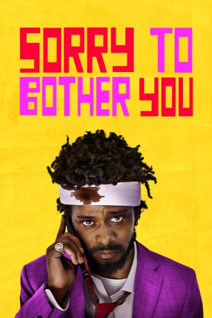

#11178 Sorry to Bother You
 
 IMDB-Wertung: 7.0 / 10
IMDB-Wertung: 7.0 / 10  Tomatometer: 93
Tomatometer: 93  Metascore: 80
Metascore: 80 
Dieser Film entwickelt eine faszinierende Vision des heutigen Oakland in Kalifornien. Dort entdeckt Telefonverkäufer Cassius Green einen magischen Schlüssel, der ihm zu überirdischem Ruhm verhelfen kann – und ihn in ein makabres Universum befördert. Schnell geht seine Karriere durch die Decke, doch seine Freunde und Kollegen haben andere Sorgen: Sie organisieren Proteste gegen die repressive Politik der Arbeitgeber. Cassius gerät bald unter den Einfluss von Steve Lift, einem Kokain schnüffelnden CEO. Der bietet Cassius ein Gehalt an, das seine kühnsten Träume übersteigt.
Jahr: 2018
Dauer: 110 Minuten
FSK:
Land: USA Studio: Annapurna PicturesTonspuren: DD5.1 - ,
Untertitel:
Auflösung: 1080p (1920x808) Größe: 8437 MB
Genre: Sci-Fi, Komödie, Fantasy
Regisseur: Boots Riley
Drehbuch: Boots Riley
Soundtrack: The Coup, Merrill Garbus, Boots Riley, Tune-Yards
Darsteller:
- LaKeith Stanfield als Cassius Green
 Tessa Thompson als Detroit
Tessa Thompson als Detroit- Jermaine Fowler als Salvador
- Omari Hardwick als Mr. _______
 Terry Crews als Sergio
Terry Crews als Sergio Michael X. Sommers als Johnny
Michael X. Sommers als Johnny Danny Glover als Langston
Danny Glover als Langston Steven Yeun als Squeeze
Steven Yeun als Squeeze Armie Hammer als Steve Lift
Armie Hammer als Steve Lift Robert Longstreet als Anderson
Robert Longstreet als Anderson David Cross als Cassius's White Voice
David Cross als Cassius's White Voice Patton Oswalt als Mr. _______'s White Voice
Patton Oswalt als Mr. _______'s White Voice- Lily James als Detroit's White British Voice
 Forest Whitaker als First Equisapien / Demarius
Forest Whitaker als First Equisapien / Demarius Rosario Dawson als Voice in Elevator
Rosario Dawson als Voice in Elevator- Shelley Mitchell als Mrs. Costello
- Jerry Mcdaniel Jr. als Man Eating Dinner
- Indigo Jackson als Cynthia Rose / Neanderthal Woman
- Eric Jacobus als Blackwater Commander
- Elaine A. Clark als Game Show Host
- Mistah F.A.B. als Car Passenger
- Val Garrahan als Woman on Couch
 David Fine als Street Preacher
David Fine als Street Preacher- Damion Gallegos als Jim Ellman
- Michael Rhys Kan als Mr. Son
- Molly Brady als Entertainment News Host
- W. Kamau Bell als Other Man in Crowd
- Safiya Fredericks als Colette
- Thessaly Lerner als DIY Wig-Making Host
- Ken Gamble als Screaming Equisapien
- Jacinta Kaumbulu als Left Eye Street Artist
- Annie Chen als Left Eye Street Artist
- Akilah A. Walker als Left Eye Street Artist
- William W. Barbour als Soldier / Party Guest (uncredited)
 Marcella Bragio als Power Caller / Lady in Red (uncredited)
Marcella Bragio als Power Caller / Lady in Red (uncredited)- Anthony Cabello als Worry Free Gay Commercial Person (uncredited)
 Cabran E. Chamberlain als Striker (uncredited)
Cabran E. Chamberlain als Striker (uncredited) Talon Crow als Telemarketer (uncredited)
Talon Crow als Telemarketer (uncredited)- Mahari Crown als Fake Cassius Green (uncredited)
- M. Shawn Cunningham als The Bouncer (uncredited)
- Cyl'Nita als Striker / Protester (uncredited)
- John Demakas als Bloody Protester (uncredited)
- Jonathan Duffy als Man Brushing Teeth in Car (uncredited)
- Tom Hart als Senator (uncredited)
- Linda Joy Henry als Power Caller (uncredited)
- Dawayne Jordan als Football Player (uncredited)
- Brandon E. Lee als Injured Striker (uncredited)
- Sharon Mahari als Girl in VIP Room (uncredited)
- Mary Lu Marr als Striker (uncredited)
- Ed Moy als Telemarketer (uncredited)
Datei: X:\2018(N-Z)\Sorry to Bother You (2018, FSK, 1920x808).mkv seit 09.05.2019
Festplatte: HD 2018(G-Z)-2019(A-Z)
 Es gibt insgesamt 172 Filme in der Gruppe '2018(N-Z)'
Es gibt insgesamt 172 Filme in der Gruppe '2018(N-Z)'